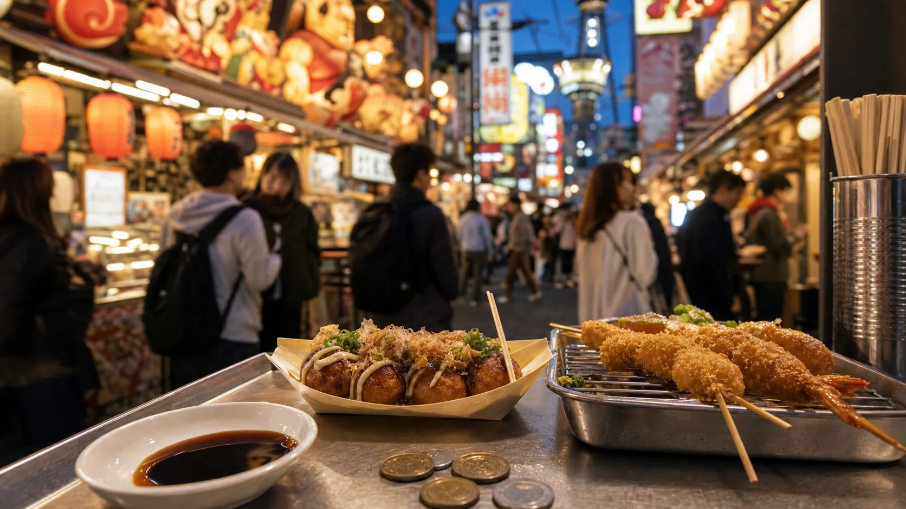
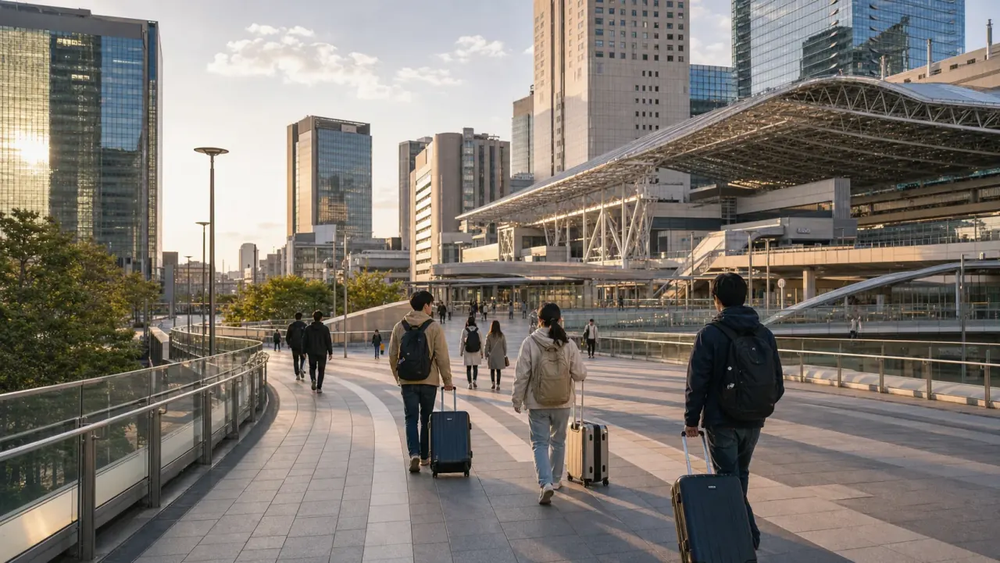
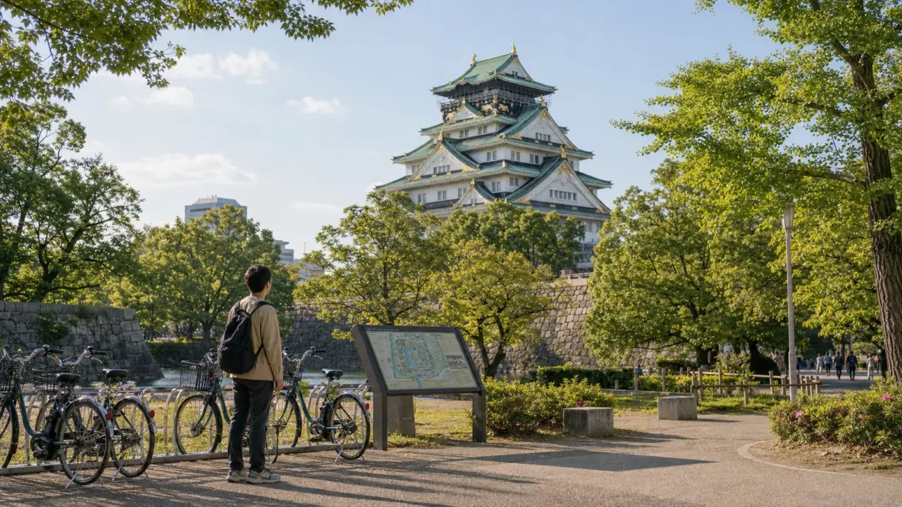
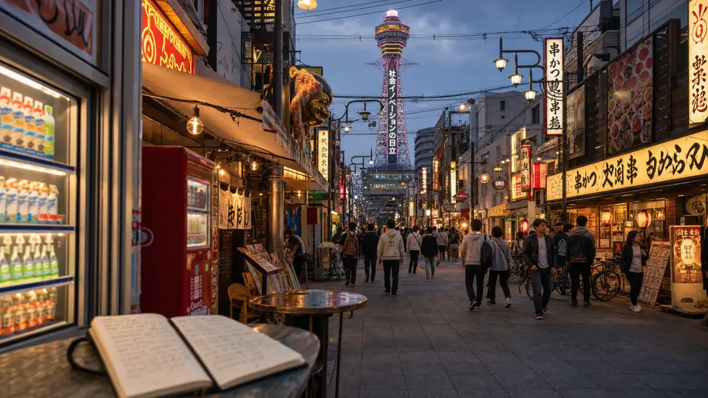
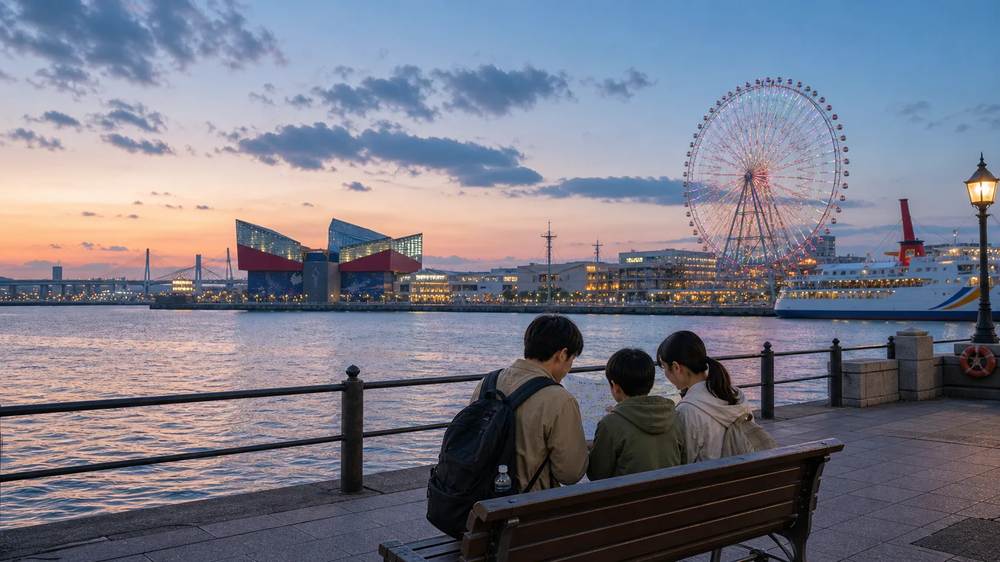

- Last reviewed
- June 3, 2026
- Best for
- Food, nightlife, Kansai Airport access, day trips, and a cheaper base than Kyoto
- Trip length
- 1 day for highlights, 2 to 3 days for a balanced first visit
- Budget pressure
- Hotel base, late-night food, airport transfer, paid attractions, and day-trip transport
- Use this to decide
- Whether Osaka should be a base city, a food stop, or a day-trip hub
Osaka is usually easier on the budget than Kyoto and less overwhelming than Tokyo. It works best when you treat it as a food city, a transport hub, and a base for Kansai day trips instead of trying to copy a temple-heavy Kyoto route.
Main Osaka sightseeing zones
Osaka is easier to plan than Tokyo if you separate the two big hotel cores: Namba in the south and Umeda around Osaka Station in the north. Add Osaka Castle, Shinsekai/Tennoji, and Osaka Bay only when they fit your trip length.

Food and nightlife Namba, Dotonbori, ShinsaibashiBest for first-night energy, casual food, shopping, nightlife, and easy access to Kansai Airport via Nankai.

Station and hotels Umeda and Osaka StationBest for rail links, Kyoto day trips, business hotels, department stores, and a cleaner transport base.

Classic landmark Osaka Castle and parkBest for a half-day walk, park time, history, photos, and a calmer break from food streets.

Retro local Osaka Shinsekai and TennojiBest for kushikatsu, retro streets, Tennoji Park, Abeno Harukas, and value hotels south of Namba.

Waterfront and family days Osaka BayBest for the aquarium area, waterfront views, theme-park planning, and a lighter final day.
How many days in Osaka?
| Trip length | What to do | What to avoid |
|---|---|---|
| 1 day | Namba/Dotonbori plus Osaka Castle or Shinsekai | Trying to add Kyoto or Nara on the same day. |
| 2 days | Food night, Osaka Castle, Umeda, Shinsekai/Tennoji | Paying for every tower and viewpoint. |
| 3 days | Add Osaka Bay or a day trip to Nara/Kobe/Kyoto | Changing hotels between Osaka and Kyoto without a reason. |
| 4+ days | Use Osaka as a Kansai base if hotel prices are better | Ignoring transfer time to Kyoto sights. |
Where to stay in Osaka
Namba is the easiest first Osaka base if you want food, nightlife, and Kansai Airport access. Umeda is better if your route depends on JR lines, Kyoto day trips, or a calmer hotel area. Tennoji can be good value, but check late-night access and exact station distance. Use the Osaka hotel area guide before booking.
If Kyoto hotel prices are high, Osaka can work as a cheaper base for part of the trip. The tradeoff is morning travel time into Kyoto and more careful route planning. Use the Kyoto hotel area guide before deciding that Osaka is automatically cheaper.
Airport and local transport
Kansai Airport is one reason Osaka is practical. Namba works well with Nankai routes. Umeda, Shin-Osaka, and Kyoto need different transfer choices, so do not book the hotel before checking the arrival route.
- Use Namba if food/nightlife and KIX access are the priority.
- Use Umeda or Shin-Osaka if rail connections and day trips matter more.
- Use an IC card for most local rides unless a specific pass matches your exact route.
- Read the KIX to Osaka or Kyoto transfer guide before booking a nonrefundable hotel.
Budget food that feels like Osaka
Osaka is one of the easiest cities in Japan to eat well without spending heavily. Build the day around casual meals instead of expensive reservations: takoyaki, okonomiyaki, kushikatsu, ramen, udon, curry, standing bars, department-store basements, and convenience-store backup meals.
Dotonbori is fun but not always the cheapest. Use it for atmosphere and one snack, then compare smaller streets around Namba, Shinsekai, Tenma, or station basements for better value.
Day trips from Osaka
Osaka can be a good base for Nara, Kobe, Himeji, Kyoto, and Universal-area planning. The budget rule is simple: compare hotel savings against daily train time. Osaka can save money, but it should not turn every Kyoto morning into a crowded commute.
For longer routes, check the JR Pass alternatives guide. Many Kansai-first trips do better with individual tickets, regional passes, or slower buses than with a nationwide pass.
Common Osaka budget mistakes
Namba and Umeda are both useful, but they solve different problems. Match the base to airport, food, and day-trip plans.
Use Dotonbori for the mood, then spread meals into side streets, station areas, and Shinsekai.
A strong Osaka day can be food plus one major area. You do not need every landmark.
Cheap Osaka rooms can lose value if every Kyoto day starts with a long transfer.
Sources and current checks
Verify opening days, attraction rules, and transit before booking. Start with OSAKA-INFO's popular tourist spots guide, OSAKA-INFO's Dotonbori guide, and official Osaka guidebook and map downloads.
Choose Namba or Umeda first, then decide whether Osaka is a city stop or a Kansai base.
Plan KIX TransferOsaka is at its best when the route is simple: one major zone by day, one food zone by night, and a hotel base that matches your airport route.